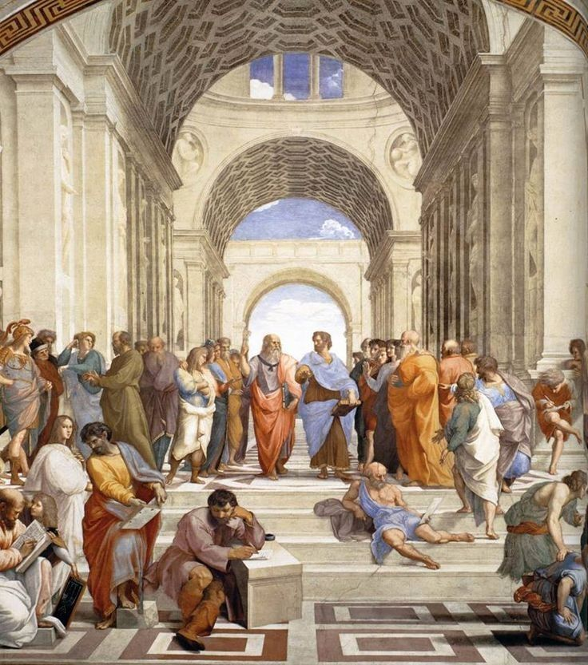

← Tous les chapitres · Accueil
Chapitre 4 : Logique et Raisonnement

Cette section introduit progressivement le vocabulaire, les notations et les outils nécessaires à la rédaction claire et rigoureuse d’une démonstration.
Aucune étude complète de la logique ou de la théorie des ensembles n’est prévue ; seules les notions de base sont exigées afin de fixer la terminologie.
Les élèves doivent savoir utiliser correctement les connecteurs logiques et les quantificateurs (universel, existentiel), repérer les quantifications implicites, formuler la négation d’une proposition et distinguer la proposition directe, sa réciproque, sa contraposée et sa négation.
Ils doivent comprendre et employer les notions de condition nécessaire et de condition suffisante, utiliser un contre-exemple pour infirmer une proposition universelle, et maîtriser les principaux types de raisonnement : par contraposée, par disjonction des cas, par analyse-synthèse, par l’absurde et par récurrence.
Ces notions sont présentées au fil du programme, au besoin des exemples, sans étude exhaustive en début d’année.
Cours : Télécharger
TD : Télécharger